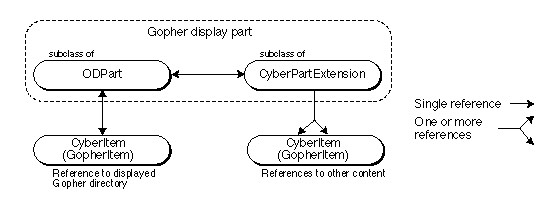
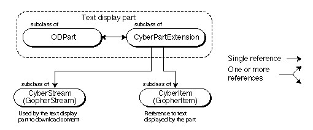

A Cyberdog Example
This section describes an example that illustrates how the key Cyberdog objects cooperate at runtime to access and display Internet data. The example includes two Cyberdog display parts:
- Gopher display part that displays the contents of a Gopher directory from a Gopher server. The Gopher display part is displayed embedded in the navigator.
- text display part that displays a text item stored on a Gopher server. The text display part is displayed in its own window.
Gopher Display Part
The Cyberdog Gopher display part, shown in Figure 2-11, displays Gopher directories; it knows how to interpret data coming from a Gopher server and how to display Gopher directories in a meaningful way. In particular, the Gopher display part knows that the Gopher directory entries represent links to other data located on the Gopher server and displays those links differently from other content. When the user clicks on a link, the Gopher display part initiates retrieving the content referenced by the link.Figure 2-11 The Gopher display part embedded in the navigator
In addition to displaying the contents of a Gopher directory, the Gopher display part must be able to
In addition to its Cyberdog-specific features, the Gopher display part retains all the features of an ordinary OpenDoc part. It can display content, be embedded in other parts, store its content, and so on.
- download Gopher directories using a stream
- display status information while downloading
- add its menu items to the menu bar
- interact with the log and the notebook
- embed itself in a navigator
The Gopher display part is embedded in the Cyberdog navigator; both the Gopher display part and the navigator are contained in the Cyberdog session document. The Gopher display part has an extension subclassed from
CyberPartExtension. The extension receives Cyberdog-related messages; the part and its extension cooperate to respond to those messages.The Gopher display part displays the content referenced by a
GopherItemobject (an object subclassed from classCyberItem). In addition, the Gopher display part caches aGopherItemobject for each link in the Gopher directory. The Gopher display part is responsible for initiating a response when the user clicks on a link. The runtime object relationships of the Gopher display part are shown in Figure 2-12.Figure 2-12 Gopher display part object relationships

Creating and Opening the Text Display Part
When the user clicks on one of the links shown in Figure 2-11, the Gopher display part calls the corresponding Cyberdog item'sOpenmethod. TheOpenmethod does two things:The Cyberdog text display part is an OpenDoc part whose part editor can display text and has been extended with a
- It creates a Cyberdog text display part because the Cyberdog item the user clicked on references text data.
- It calls the text display part's
OpenCyberItemmethod to notify the text display part it is being opened by a Cyberdog item.CyberPartExtensionsubclass. The text display part is created in the Cyberdog session document. The editor for the Cyberdog text display part is shown in Figure 2-13.Figure 2-13 The text display part
Once the text display part has been created, the Cyberdog item's
Openmethod calls the text display part'sOpenCyberItemmethod, passing the text display part theCyberItemobject to be opened. The default implementation ofOpenCyberItemdoes two things:Developers of Cyberdog display parts usually override
- It calls
SetCyberItemto cache theCyberItemobject in the text display part's extension.- It calls the text display part's
Openmethod, which opens the part.OpenCyberItemto receive notification that the part is opening; typically, in addition to the implementation described above,OpenCyberItemcreates a Cyberdog stream, initiates the download operation, and adds the Cyberdog item to the log.Downloading Content to the Text Display Part
Once the text display part has been created, it needs to download the content referenced by its Cyberdog item. The Cyberdog item relies on a Cyberdog stream to download the data for the text display part.In its
OpenCyberItemmethod, the text display part requests a stream object from its Cyberdog item by calling the Cyberdog item'sCreateCyberStreammethod. The Cyberdog item returns aGopherStreamobject (an object subclassed from classCyberStream), initialized to download the data referenced by the Cyberdog item from the Gopher server. Then,OpenCyberItemcalls the stream'sOpenmethod to initiate the download operation.Figure 2-14 shows the runtime relationships between the text display part, the Cyberdog item, and the Cyberdog stream.
Figure 2-14 Downloading object relationships

The stream's
Openmethod signals the stream to start downloading.Openis an asynchronous method; it returns to the Cyberdog text display part immediately, and the stream proceeds to download at its own pace in separate thread. The stream needs to resolve the address to find the data, establish a connection, and begin downloading the data.The text display part calls the stream's
GetStreamStatusmethod periodically to monitor the progress of the download operation.GetStreamStatusreturns a set of flags that indicate status and error conditions. In particular,GetStreamStatusreturns thekCDDataAvailableflag when the stream has some data downloaded and ready for the text display part to read. If data is available, the text display part calls the stream'sGetBuffermethod to retrieve a buffer of downloaded data. When the text display part is finished using a buffer, it callsReleaseBufferto release the buffer back to the stream. WhenGetStreamStatusreturns thekCDDownloadCompleteflag, the text display part deletes the stream object.The stream methods
GetStreamStatus,GetBuffer, andReleaseBufferare all synchronous methods; they are designed so that a stream object can always respond immediately. The stream knows its status without any lengthy computation, andGetBufferandReleaseBufferoperate on data the stream has already downloaded.